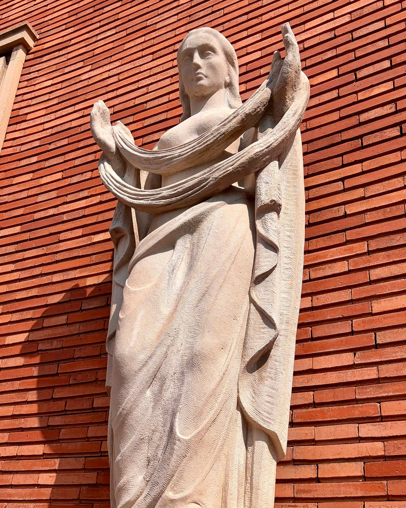
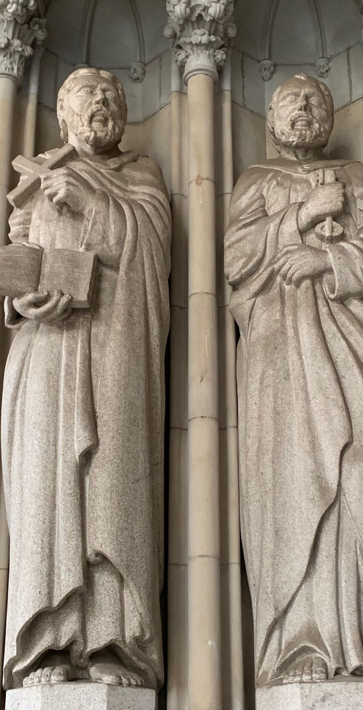
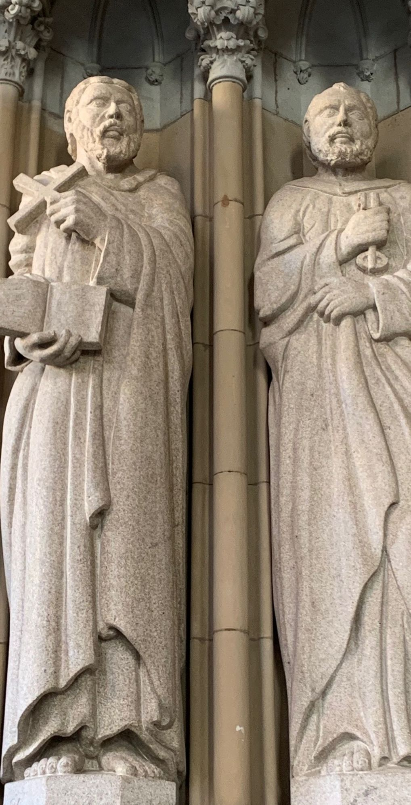

Imitación de piedra y reintegraciones
Cuando un edificio crece o pierde piezas, lo nuevo tiene que leerse como la piedra que ya estaba. En la remonta de una fachada de la Rambla de Catalunya, nuestro equipo imitó la piedra de Montjuïc en los elementos nuevos para que fueran iguales que los originales.

Dos trabajos que se suelen confundir
Los dos acaban en piedra que no desentona, pero parten de situaciones opuestas: en uno no hay piedra; en el otro, la piedra es original y hay que conservarla.
Imitación de piedra
Para elementos nuevos que deben parecer de piedra: remontas, reposiciones de cornisas, impostas o recercados, y reparaciones grandes donde ya no queda piedra que salvar.
Se trabaja con morteros y estucos de cal cargados con árido de piedra y pigmentos minerales. El color se ajusta con muestras en obra, junto a la piedra original y con su misma luz, hasta que no se distinguen. Luego se le da la textura de la labra (abujardado, apomazado, a trinchante) y, si la piedra la tiene, la veta.
Reintegración de piedra
Para piedra original con pérdidas: esculturas, molduras, capiteles o sillares desgastados, rotos o descompuestos.
Primero se limpia y se consolida lo que queda. Después se reconstruye el volumen perdido con un mortero de reparación compatible, más blando que la piedra, para que si algo tiene que ceder sea el añadido y no el original. En faltantes grandes se arma por dentro con varilla de acero inoxidable o de fibra.
El edificio se remontó: se le añadió altura. Los elementos nuevos de la fachada tenían que quedar iguales que los antiguos, de piedra de Montjuïc, la arenisca de tonos ocres y dorados con la que se construyó buena parte de la Barcelona histórica.
Nuestro equipo hizo la imitación de esa piedra en los elementos nuevos, para que la ampliación no se distinguiera de la fachada original.
- Lugar
- Rambla de Catalunya, Barcelona
- Año
- 2014
- Trabajo
- Imitación de piedra de Montjuïc en los elementos nuevos de la remonta
- Objetivo
- Que lo nuevo fuera igual que la piedra original


Toda reintegración empieza por una limpieza
No se puede igualar un color sobre piedra sucia: lo que parece gris puede ser ocre bajo la costra. Por eso la limpieza va primero, y se detiene antes de arrancar la superficie de la piedra.
En estas dos imágenes de piedra se ve el antes y el después de la limpieza.
De cerca, pliegue a pliegue
La imitación también puede ser pictórica: el falso mármol y la falsa piedra pintados son habituales en vestíbulos y escaleras antiguos, y se rehacen con pincel. Pulsa una foto para verla grande.
Sobre imitación de piedra
¿Se nota la diferencia con la piedra de verdad?
Bien hecha, a la distancia normal de observación no. La clave está en las muestras: el color se ajusta en obra, junto a la piedra original y con su luz, y la textura se trabaja con las mismas herramientas de la labra. Un mortero del color correcto pero liso se nota enseguida.
¿Por qué no poner piedra nueva?
A veces es la mejor opción, y lo decimos. Pero muchas canteras históricas ya no producen, como pasa con la de Montjuïc, y una piedra «parecida» de otra procedencia puede envejecer de otra manera. La imitación permite igualar el color y la textura exactos, pesa menos y se ancla más fácilmente en una remonta.
¿Aguanta a la intemperie?
Sí, si el sistema es el adecuado: morteros de cal o de base mineral, compatibles con el soporte y con la piedra de al lado, y una buena resolución de los encuentros para que el agua no se quede en la junta. Es la misma lógica que usamos en fachadas históricas.
¿Se puede reparar una escultura de piedra rota?
Sí. Se pegan los fragmentos que existen, se arma por dentro si la pieza lo necesita y se reconstruye lo que falta con un mortero compatible. El criterio sobre cuánto reconstruir (solo el volumen o también el detalle) se acuerda antes de empezar.
¿Una pieza que tiene que parecer de siempre?
Envíanos fotos de la piedra original y del elemento que hay que reponer, o el detalle del proyecto. Te decimos cómo lo resolveríamos.